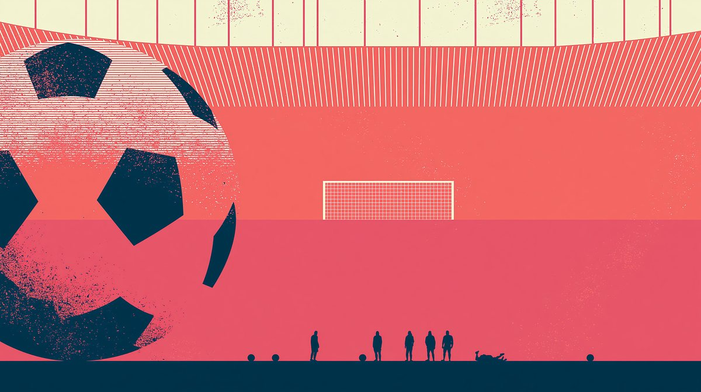

Speaking & Role-Play Series — C1 Advanced

You're a professional footballer. Ninety minutes of pressure, decisions and diplomacy — from the tunnel to the post-match interview. Choose the response a seasoned professional would actually give.